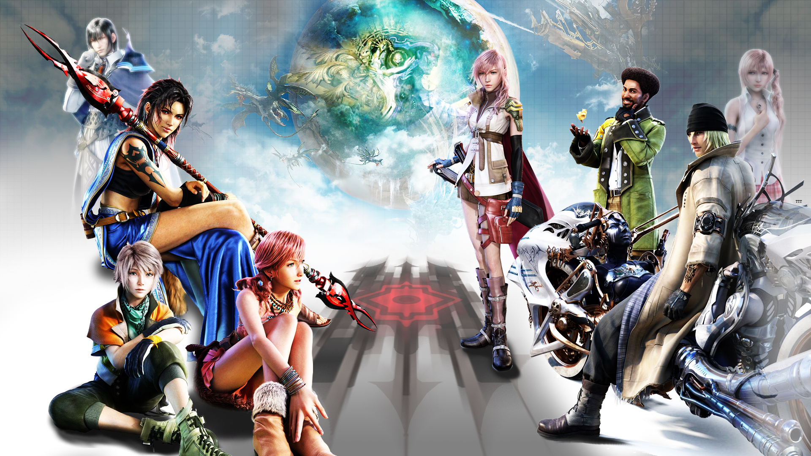
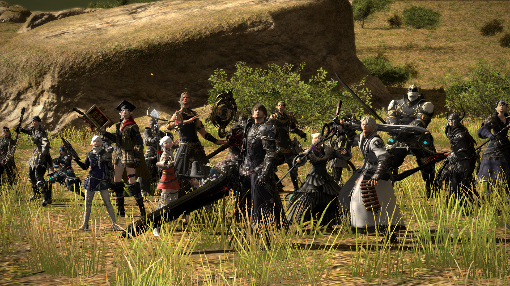
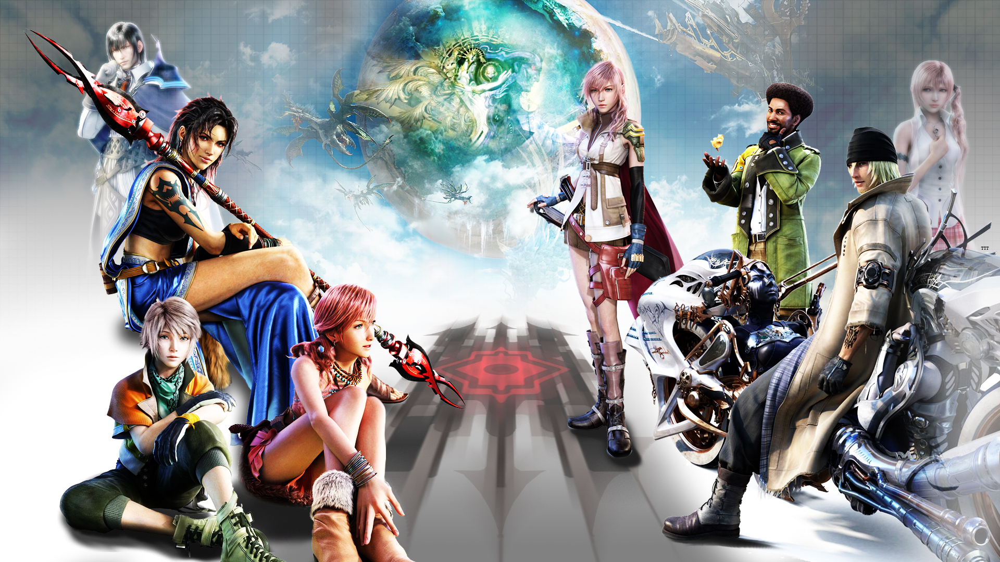
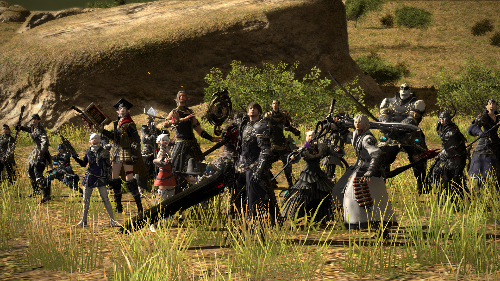
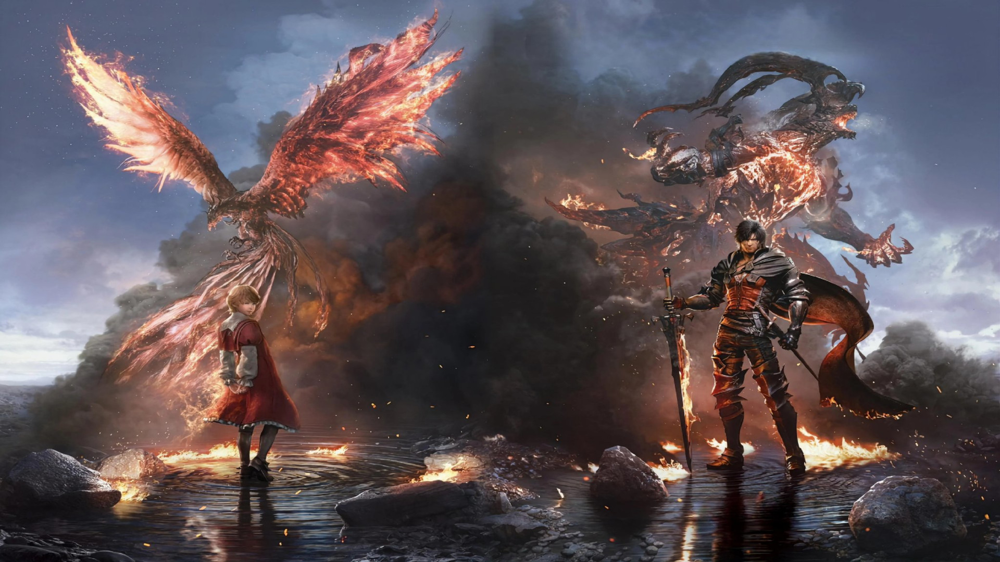
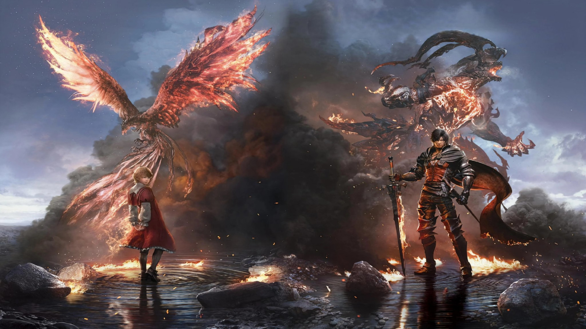

 

O primeiro Final Fantasy foi lançado em 1987 e deveria ser o último, se não fosse pelo sucesso estrondoso que se tornou. Ninguém poderia ter previsto que daria origem a uma franquia incrivelmente popular de décadas. Tinha um grande mundo abstrato para explorar, locais distintos para visitar e masmorras para saquear. Mas você também constrói seu próprio grupo de quatro de várias classes, como Red Mage, Thief ou Black Belt através dos quatro cristais elementais místicos que devem ser restaurados.
Características principais:- Final Fantasy não fica mais clássico do que este jogo de 1987
- Seis classes disponíveis para o seu grupo de 4 personagens
- Gráficos simples, mas evocativos
- As classes evoluem com a experiência